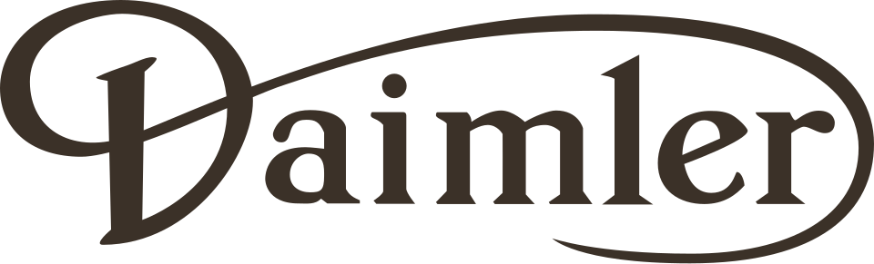

다임러 컴퍼니 Daimler Company
다임러 컴퍼니(Daimler Company)는 1896년 H. J. Lawson이 런던에서 설립하고 코번트리에 제조 기반을 둔 영국의 독립 자동차 제조사이다. 2025년 12월 23일 해산되었다.
최종 업데이트

다임러 컴퍼니는 어떤 브랜드인가
다임러 컴퍼니는 영국의 독립 자동차 제조사로, 1910년 이전에는 Daimler Motor Company Limited로 불렸다. 1896년 H.
Lawson이 런던에서 설립했고 제조 기반은 코번트리에 두었다. 회사는 Gottlieb Daimler와 독일 Cannstatt의 Daimler-Motoren-Gesellschaft로부터 다임러 이름을 쓸 권리를 동시에 얻었다.
1902년 영국 군주에게 자동차를 공급하는 Royal Warrant을 받았으나 1950년대에 Rolls-Royce에 밀려 이 지위를 잃었다. 1910년 Birmingham Small Arms Company(BSA)에 인수되었고 1960년 BSA가 Jaguar Cars에 매각했다.
2009년 마지막 X358 Daimler 모델이 단종되며 마크 사용이 끝났고, 2025년 12월 23일 수년간 휴면 상태이던 회사가 해산되었다.
다임러 컴퍼니는 어떻게 시작되고 성장했나
Frederick Richard Simms는 1889년 Bremen Exhibition에 쓸 공중 케이블웨이 건설을 감독하던 중 Gottlieb Daimler의 엔진으로 움직이는 소형 철도차를 보았다. 이후 Daimler와 친구가 되었고, 1890년 Daimler의 엔진을 영국에 소개해 모터보트 동력으로 쓰게 했다.
1891년 2월 18일자 계약으로 Daimler 특허의 영국 및 제국 내 권리를 얻었고, 관련 사업은 1893년 5월 26일 The Daimler Motor Syndicate Limited로 옮겨졌다. 1894년 Paris–Rouen 대회에서 Daimler 엔진을 단 Peugeot와 Panhard가 성과를 내자 Simms는 자동차 공장을 열기로 했다.
1895년 6월 7일에는 이사회에 The Daimler Motor Co를 설립할 뜻을 밝혔다.
다임러 컴퍼니의 브랜드 아이덴티티는 무엇인가
독일 Daimler 엔진의 영국 사용권을 바탕으로 출발해 Royal Warrant을 받은 영국 자동차 브랜드이며, 훗날 Jaguar의 고급 트림으로 이어졌다.
다임러 컴퍼니의 대표 제품과 서비스는 무엇인가
다임러 컴퍼니는 승용차를 제조했고, 일부 차량에는 독자적인 기술을 썼다. Daimler-Knight 엔진은 1909년부터 1935년까지 사용했고, 웜 기어 최종 구동은 1909년부터 제2차 세계대전 이후까지 장착했다.
특허를 받은 유체 플라이휠은 Wilson preselector 변속기와 함께 1930년부터 1950년대 중반까지 사용했다. 1950년대에는 소형차와 호화로운 쇼카를 함께 내놓았고, 스포츠카·고성능 고급 세단·리무진도 개발해 판매했다.
1968년부터 1992년까지는 Jaguar 기반의 Daimler DS420 리무진이 생산되었다.
다임러 컴퍼니는 지금 어떤 상태인가
다임러 컴퍼니는 수년간 휴면 상태였다가 2025년 12월 23일 해산되었다. Jaguar Cars는 2008년 Land Rover와 함께 Tata Motors에 매각되었고, 2013년 두 회사가 합쳐져 Jaguar Land Rover Limited가 되었다.
Daimler 자동차 브랜드의 권리는 이때 Jaguar Land Rover로 이전되었다.
다임러 컴퍼니 로고는 어떻게 변해왔나
자주 묻는 질문
다임러 컴퍼니는 어느 나라 브랜드인가요?
다임러 컴퍼니는 영국의 모빌리티 브랜드입니다.
다임러 컴퍼니는 언제 설립되었나요?
다임러 컴퍼니는 1896년 설립되었습니다.
다임러 컴퍼니의 브랜드 아이덴티티는 무엇인가요?
독일 Daimler 엔진의 영국 사용권을 바탕으로 출발해 Royal Warrant을 받은 영국 자동차 브랜드이며, 훗날 Jaguar의 고급 트림으로 이어졌다.
다임러 컴퍼니의 대표 제품은 무엇인가요?
다임러 컴퍼니는 승용차를 제조했고, 일부 차량에는 독자적인 기술을 썼다.
다임러 컴퍼니는 현재 어떤 상태인가요?
다임러 컴퍼니는 수년간 휴면 상태였다가 2025년 12월 23일 해산되었다.
다임러 컴퍼니의 창업자는 누구인가요?
다임러 컴퍼니의 창업자는 Frederick Richard Simms, Harry John Lawson, 고틀리프 다임러입니다(위키데이터 기준).
다임러 컴퍼니의 본사는 어디에 있나요?
다임러 컴퍼니의 본사는 코번트리에 있습니다(위키데이터 기준).
출처와 검증
다임러 컴퍼니 관련 참고: 위키데이터 Q27539 · 한국어 위키백과 · 영어 위키백과. 브랜드명은 한글과 원어를 함께 표기하되 데이터에 없는 표기는 만들지 않습니다. 기원 국가·설립연도는 검수된 정의문에서 확인된 값을 우선하고, 없을 때만 공식 웹사이트 URL이 일치하는 위키데이터 개체의 값을 씁니다. 위키데이터 값은 2026-11-13 기준입니다.